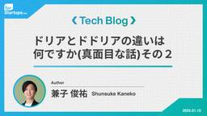

for Startups Tech blog
https://tech.forstartups.com/
このブログのデザインを刷新しました。（2023/12/26）
フィード

ドリアとドドリアの違いは何ですか(真面目な話)その２
for Startups Tech blog
こんにちは、STARTUP DBのPdM 兼子(@S_Kaneko22)です！ STARTUP DBは、国内最大級のスタートアップ情報を集約したプラットフォームで、25,000社以上のスタートアップ企業情報を提供しています。 さて最近、米OpenAIがChatGPT Proという新プランを発表しました。従来最高性能と評価されていたモデルをさらに上回る高度な思考モードを搭載し、難問への対応力が一段と高まったとされています。さらに、月額200ドル（約3万円）という強気の価格設定も話題となり、「約3万円も出せば、どれほど質の高い回答が得られるのか？」と、仕事で使うなら相当頼れるアシスタントになるので…
2日前

半年間アジャイル開発に参画してみて学んだこと
for Startups Tech blog
こんにちは、フォースタートアップス株式会社のエンジニアの李です！ 今年の4月に新卒で入社後、STARTUP DB（スタートアップデータベース)（以降SDB）の開発チームに参画し、半年経ちました。早いものですね。 （入社直後にこんな記事を書いています！もしよろしければ合わせてご覧ください！） tech.forstartups.com 今回のテックブログでは、入社してからの半年間で体験したSDBチームのアジャイル開発についてまとめていきます。 SDBチームの雰囲気はどんな感じ？ アジャイル開発をどのように進めている？ 本稿を通じて、これらの疑問が少しでも解消されれば幸いです！ 目次 1. SDBチ…
1ヶ月前
業務の困りごとを自作のChrome拡張機能で解決しました！
for Startups Tech blog
目次 はじめに 解決したい課題 解決策の検討と具体化 開発プロセス 準備と学習 実装の概要 作った拡張機能の使い方を紹介 開発の成果 公開の手順 おわりに はじめに こんにちは！フォースタートアップス株式会社のエンジニアの山﨑（@flashlight999）です。 皆さん、日々の業務で「この作業、なんとかならないの？」と感じることはありませんか？ 私もそんな悩みを抱えながら、ある日ふと思いつきました。 「それなら、自分でツールを作ればいいんじゃない？」 そこで挑戦したのが、Chrome拡張機能の開発です。 この記事では、私が開発した拡張機能を使ってどのように課題を解決したのか、そしてその成果に…
1ヶ月前
認定スクラムマスター（RSM）を取得してトライしてみたこと
for Startups Tech blog
画像生成AIによる「楽しくスクラムを組む」の様子 こんにちは、フォースタートアップス株式会社のエンジニアの八巻（@hachimaki37）です。 Scrum Inc. 認定資格スクラムマスター研修を今年5月に受講し、Registered Scrum Master™認定資格（以下、RSMと呼ぶ）を取得いたしました。この研修で習得した知見や技術を活かし、思考錯誤しながらいくつかトライを試みています。 今回のテックブログでは、RSMやスクラムの概要について簡単に触れ、RSMを取得してから行った取り組みを書いていきます。 ※RSMの講義内容やトライした結果の効果測定についてはあまり触れていません。その…
4ヶ月前
ドリアとドドリアの違いは何ですか(真面目な話)
for Startups Tech blog
どうも〜ChatEGUことエンジニアの江種(@toshiya_egusa)です！さまざまな質問にお答えすることができます！現在、私は主にRuby on Railsで作られている社内向けプロダクト「タレントエージェンシー支援システム（SFA/CRM）」の開発、運用を担当しております。 はじめに ChatGPTとは、ご存知の方も多いと思われますが、OpenAI社が2022年11月30日に公開した対話型生成AIです。本当に人間と話しているかのように、自然に対話することができるのが特徴の一つです。Claude(クロード)とは、Anthropic社が2023年3月14日に公開した対話型生成AIです。注目…
4ヶ月前
メンバーレイヤーが考えてみた『開発生産性』と『開発者体験』（正編）
for Startups Tech blog
こんにちは、フォースタートアップス株式会社のエンジニアの八巻（@hachimaki37）です。 最近はもっぱら DevEx に興味が湧いています。6/28、29日に開催された 開発生産性カンファレンス に参加してきて、開発生産性や開発者体験について非常に学びある2日間を過ごしました。 今回のテックブログでは、開発者体験の基となる「DevEx: What Actually Drives Productivity」という論文を基に、フォースタートアップスの開発組織で行った「開発者体験に関するアンケート調査」と「開発生産性とは一体何なのか」を私自身の経験や見解に基づいて、書いていきたいと思います。 …
5ヶ月前
文系出身でエンジニアは無理？そんなことないよ！
for Startups Tech blog
こんにちは！エンジニアの李です。 今年の4月にフォースタートアップス株式会社に新卒入社し、STARTUP DB（スタートアップデータベース）という国内最大級のスタートアップ情報を集約したプラットフォームの開発に携わらせていただいています。 目次 1. はじめに 2. 自己紹介 3. エンジニアの「魅力」 3.1 ゲーム感覚のような楽しさがある 3.2 思考の整理ができるようになる 3.3 貢献したことが目に見える 4. なぜフォースタートアップスに入社したのか？ 5. フォースタートアップスの開発業務 5.1 インターンで学んだこと 5.2 フォースタートアップスならではのこと 6. 私が考え…
6ヶ月前
エンジニアインターンの解像度がちょっとあがる話
for Startups Tech blog
ご挨拶 初めまして。フォースタートアップス株式会社（以下「フォースタ」という）のエンジニアの田畑です。2024年の春に加わり、自社サービス「STARTUP DB」の開発に携わっています。 私はフォースタでインターンを経験したのち、入社しました。 今回は技術的な話よりも、自分が感じたことやチームの雰囲気に焦点を当て、フォースタでインターンを経験した時に感じたことや、フォースタのエンジニアチームの雰囲気などをお伝えできればと思います。 目次 インターンの内容 フォースタのインターンを通して感じたこと フォースタのインターンに来るからこそ得られる・得られたこと 個人開発とのギャップ まとめ 1. イ…
7ヶ月前
モブレビューを企画してやってみた
for Startups Tech blog
こんにちは、フォースタートアップス株式会社のエンジニアの八巻（@hachimaki37）です。主にタレントエージェンシー支援システム（SFA/CRM）のシステム開発を担当しております。 チームの新たな取り組みとして、モブレビューを今年に入ってから実施しています。今日までに8回ほどモブレビューを開催し、徐々にチームのイベント事になってきているのではないかと感じております。 今回の記事では、モブレビューとは何かをはじめ、どんな目的で、どのようにチームで進めているのかについて紹介していきたいと思います。 前提 チーム PdM: 1名 Engineer: 3名 SRE: 1名 Designer: 2名…
7ヶ月前
CI/CD実行時間を50％以上短縮させた話とその1年後の現状
for Startups Tech blog
こんにちは。社内向けプロダクト「タレントエージェンシー支援システム（SFA/CRM）」（以下、プロダクト）にてSREをしている表と申します。 入社当初にCI/CDの改善を行い、約50％の時間短縮を実現しました。 CI/CDの改善から約1年が経過したため、実行内容と1年経った現状についてお話ししたいと思います。 前置き 本筋から逸れるため詳細は割愛しますが、本プロダクトのブランチ戦略はGitHub Flowを少し緩めに採用しています。 緩めにというのはmainブランチ、featureブランチに加えて、Stagingブランチの3つのブランチを切る運用のことを指します。 弊社ではStaging環境を…
9ヶ月前
アジャイルチームのコアバリュー創りを紹介！あなたの「当たり前」は誰かにとっては「有り難きもの」
for Startups Tech blog
こんにちは、フォースタートアップス株式会社のエンジニアの八巻（@hachimaki37）です。主にタレントエージェンシー支援システム（SFA/CRM）のシステム開発を担当し、フルスタックに開発を行なっております。 ここ最近は、エンジニアリング以外にもスクラムや開発生産性、チームビルディングといったキーワードに興味があり、試行錯誤しながらさまざまな施策を練って進めております。今回は、所属チーム（以下、チーム）のエンジニアが中心となり、チームのコアバリューを創りました。 チームのデザイナー @Minmi303 さんに作成頂きました！ 背景をはじめ、なぜコアバリューなのか、どんな課題があり、どのよう…
10ヶ月前
認定スクラムマスター（CSM）研修に行ってきました！
for Startups Tech blog
初めまして！フォースタートアップス株式会社でエンジニアをしている平野と申します。STARTUP DBというプロダクトの開発を担当しています。 今回は2泊3日で株式会社アトラクタさんの認定スクラムマスター研修に参加させていただきましたので、その話を書きたいと思います。 イントロダクション 僕達のチームでは開発手法にスクラムを採用しています。しかし、スクラムで開発をしていくなかで「僕たちが行っているスクラムって本当にこれでいいんだっけ？」と違和感を覚えました。そこで、スクラムの本を読むなどしてスクラムの勉強を始めましたが、僕の中の違和感は消えませんでした。そんな中、認定スクラムマスター研修を見つけ…
1年前
Active Record Arel使いこなし術
for Startups Tech blog
こんにちは。フォースタートアップス株式会社、エンジニアの石田です。 前々回、前回とRubyの話をしました。今回もRubyの話です。Active RecordのArelを使い尽くす、という内容です。お付き合いください。 注意 この記事は「Arelを使わないといけなくなったときに参考になるように」という目的で書きました。「Arelを積極的に使っていこう」という趣旨ではないのでご留意ください。詳しくは次章にて。 そもそもArelを使うことについて ArelはRailsの内部APIです。内部APIであるがゆえにRailsユーザーがこれを使うことは公式で推奨されていません*1 *2。SQLはRDBのデー…
1年前
意外と知らないRubyの基礎知識（と少し応用）
for Startups Tech blog
こんにちは。フォースタートアップス株式会社、エンジニアの石田です。 前回の記事では「主にバックエンドのエンジニアをしています。」と自己紹介しましたが、今はバックエンドとフロントエンド両方を担当しています。 特に直近数ヶ月はフロントエンド(React/Next + TypeScript)ばかりやっています。ですが、私が一番好きな言語はRubyですので、今回も前回と同じくRubyの話をしたいと思います。 今回の内容はRubyの基礎知識+豆知識的な内容になります。後半になるにつれて認知度が低く、マニアック度が高くなる気がします。お付き合いください。 ゲッター/セッターメソッド Rubyで頻繁に使うa…
1年前
6ヶ月間取り組んできたアジャイルチームの改善活動を紹介します
for Startups Tech blog
こんにちは、フォースタートアップス株式会社のエンジニアの八巻（@hachimaki37）です。主にタレントエージェンシー支援システム（SFA/CRM）のシステム開発を担当し、フルスタックに開発を行なっております。 半年間に渡りチームの業務改善（以下、改善と呼ぶ）をリードして参りました。今回の記事では、具体的なHOWを中心に、どんな課題がありどのような狙いを持って改善に取り組んできたのかについて紹介します。 目次 8000文字を超える記事です。各項目で内容は完結しているため、一から熟読する必要はありません。気になる目次から飛んで拝読頂ければと思います。 チームについて 改善に対するアンケート な…
1年前
Mojoってみた
for Startups Tech blog
初めまして、2023年2月にフォースタートアップス株式会社に入社したモジョモジョドレミことモジョリアンの江種(@hairinhi)と申します。現在、主にRuby on Railsで作られている社内向けプロダクト「タレントエージェンシー支援システム（SFA/CRM）」の開発、運用を担当しております。 はじめに Mojoとは、Python構文の長所とシステムプログラミングおよびメタプログラミングを組み合わせることによって生み出された、研究と運用の間のギャップを埋める新しいプログラミング言語です。公式ドキュメントには、Mojoを使用すると、C言語よりも高速でPythonのエコシステムとシームレスに相…
1年前
Rubyでテンプレートメソッド活用してみた
for Startups Tech blog
こんにちは、エンジニアの杉谷です。 普段はSTARTUP DBチームにて、主にバックエンドエンジニアとしてSTARTUP DBの開発をしています。 今回はSTARTUP DBの開発において、自身が最近学習していたGoFのデザインパターンの１つであるテンプレートメソッドを活用して新機能の実装を行なったので、その取り組みについてお話しさせて頂きます。 テンプレートメソッドとは？ そもそもテンプレートメソッドとは何なのかお話しします。 テンプレートメソッドとは、オブジェクト指向プログラミングにおいて、抽象クラスにアルゴリズムの骨格を定義し、具象クラスで具体的な実装を定義する為のデザインパターンです。…
1年前
Rubyを2.7.1から3.1.4にアップデートした話と3.2.2を諦めたわけ
for Startups Tech blog
こんにちは。2022年12月入社の石田です。STARTUP DBの主にバックエンドのエンジニアをしています。今回はSTARTUP DBのバックエンドのRubyのバージョンアップをした話をしたいと思います。 2023/03/31をもってRuby 2.7系のサポートが終了しました。当プロジェクトでは Ruby 2.7.1を使っていたため、急遽Rubyのアップデート作業が必要に。どうせアップデートが必要ならということで、可能な限り最新のバージョンまでアップデートすることになりました。 アップデートは以下のように段階を踏んで行うことにしました。 2.7.1 → 2.7.8 → 3.0.6 → 3.1.…
2年前
ドメイン駆動設計の中核は「Design」である。近い未来に訪れる組織変化に「DDD」は最適なソリューションになり得るのか
for Startups Tech blog
こんにちは、2022年4月にフォースタートアップスにジョインしたエンジニアの八巻（@hachimaki37）です。主にタレントエージェンシー支援システム（SFA/CRM）のシステム開発を担当しております。現在所属するチームでは、サーバサイド（Ruby,RoR）、フロントエンド（Vue.js）の役割を分けず、2週間のスプリントを切って開発を行なっております。 少し前から興味が湧いていたドメイン駆動設計(以下、DDDと呼ぶ)、ありがたいことに外部研修の参加を募るアナウンスがあったため、DDD Boot Campという外部研修を受講してきました。 詳細は後述しますが、きっかけは、近い未来に訪れる当社…
2年前
コードレビュー自動化 Siderのサービス終了に伴い、GitHub Actionsで実行できるreviewdogの調査・導入をしてみた
for Startups Tech blog
こんにちは、2022年4月にフォースタートアップスにジョインしたエンジニアの八巻（@hachimaki37）です。主にタレントエージェンシー支援システム（SFA/CRM）のシステム開発を担当しております。 コードレビュー自動化サービス Siderがサービス終了となった背景から、移行先となるサービスを調査し導入をしました。今回のテックブログでは、調査過程で出てきた疑問、そして調査結果、導入方法などを合わせて執筆していきたいと思います。 背景 タレントエージェンシー支援システム（SFA/CRM）では、コードレビュー自動化サービスとしてSiderを利用しておりました。そんなSiderですが、si…
2年前
僕たちがBlue/Greenデプロイメントに失敗した理由
for Startups Tech blog
始めまして、2022年11月にフォースタートアップ株式会社にSREとして入社した表（@Retomo2214）と申します。 現在は社内向けプロダクト「タレントエージェンシー支援システム（SFA/CRM）」のシステム開発、運用を担当しております。 初めてのブログ執筆のため、拙い文章になっていると思いますが、生温かい目で見守っていただければ幸いです。 はじめに 2022年にRails7へのメジャーバージョンアップ対応およびWebpackerからViteへの移行対応を行っておりました。変更ファイル総数が約1500ファイルとなる大規模リリースをBlue/Greenデプロイメントを実施して失敗した話をつら…
2年前
Figma APIを使用し、svg形式のアイコンを /figma/images 配下にインポートするrake taskを実装してみる
for Startups Tech blog
こんにちは、2022年4月にフォースタートアップスにジョインしたエンジニアの八巻（@hachimaki37）です。入社から早半年間が経ちました。引き続き、社内向けプロダクト「タレントエージェンシー支援システム（SFA/CRM）」のシステム開発を担当しております。 はじめに 百聞は一見にしかず！ということで、まずはどんなモノか動画をご覧ください（34秒） ご視聴ありがとうございました。今回のTech Blogは 、「Figma APIを使用し、svg形式のアイコンを/figma/images配下にインポートするrake taskを実装してみる」です。開発の背景や目的、苦労話などを交えながら執筆し…
2年前
スプリントレトロスペクティブ本来の目的とは？初めてファシリをやって体感した「難しさ」と「学び」
for Startups Tech blog
こんにちは、2022年4月にフォースタートアップスにジョインしたエンジニアの八巻（@hachimaki37）です。主に社内向けプロダクト「タレントエージェンシー支援システム（SFA/CRM）」のシステム開発を担当しております。 今回は、スクラムのイベントの一つである「スプリントレトロスペクティブ（以下、レトロスペクティブ）」について書いていきたいと思います。 早速ですが、レトロスペクティブをやっていて、こんなこと思ったことありませんか？ 最近なんとなくやってるなー テーマを出したいけど、これで大丈夫かな..(迷う..) TRY実行してるけど、何が改善されたんだ？ チームで議論すべきテーマってこ…
2年前
スモールチームのインフラ担当・SREとして入社し取り組んだことと失敗したこと
for Startups Tech blog
こんにちは。フォースタートアップス株式会社でインフラ・SREを担当している吉田です。昨年入社しました。 今回は、インフラ・SRE担当の一人目として入社してからこれまでの約1年間で取り組んできたこと、失敗してきたことや課題をお話します。 入社時の弊社の状況 入社したのは約1年前。当時はオーナーや開発メンバーなど含め社員3〜5人のチームが2つあり、それぞれ別のサービスを開発していました。 社員の他にも、チーム内にはパートナーやインターンの方々もいて、約十名が曜日で入れ替わりながら参加いただいていました。 組織の状況は以下でした。 各チーム各サービスとも、開発も進み機能が徐々に増えてきた より開発や…
2年前
GithubActions未経験者がcreateトリガーでブランチのフィルタ条件を追加してみた話
for Startups Tech blog
こんにちは、2022年4月にフォースタートアップスにジョインしたエンジニアの八巻（@hachimaki37）と申します。主に社内向けプロダクト「タレントエージェンシー支援システム（SFA/CRM）」のシステム開発を担当しております。 今回は初めてGithubActionsの改修チケットに関わることになり、途中ヒイヒイ言いながらも試行錯誤して解決に至った話について書いていければと思います。 本題に入る前に、まずは「GithubActionsとは？」と「GithubActionsの導入経緯について」簡単に述べていきたいと思います。 GithubActionsとは？ GithubActionsはGi…
2年前
MetabaseとRedashどっちが良い？組織の成長とデータ活用の悩み
for Startups Tech blog
こんにちは、エンジニアの速水です。 フォースタは22年度4Qで社員が115名となりました。その数は毎年130%成長が続き、まさに拡大中の組織です。組織が100人にもなると役割分担ができてくる一方、事業の全体感をパッとつかむのは難しくなってきます。「タレントエージェンシー支援システム（SFA/CRM）」では、スタートアップ企業、転職を希望される人、ポジションの情報を集約しているのですが、組織の拡大に伴いデータ分析を必要とするシーンも増えてきました。 以前からBIツールのRedashを導入していたのですが、運用で出てきた苦しみ、そこからのMetabaseの導入、残る悩みどころについてまとめていきま…
2年前
t_wadaさんに社内向けTDD研修を開いてもらったよ
for Startups Tech blog
どうも、ばやし(@bayashimura)です。 先日、和田卓人(@t_wada)さんにフォースタートアップスのエンジニア向けにTDD(テスト駆動開発)研修をやってもらったので、紹介していきます。 きっかけ フォースタートアップスでは私が入社する前から自動テストに一定の投資をしていました。 大体の機能に関してはテストが存在し、テストを書かずにプルリクを投げると「書いてください」と返ってくる文化でもあります。 しかしプロダクトのコードが増えるに従い、テストコードも増加し、以下のような問題が発生しておりました。 テストの可読性が低く、テスト内容に対する認知負荷が高い テストのメンテナンスコストが高…
3年前
開発に至る前の要件定義で四苦八苦した話
for Startups Tech blog
こんにちは、エンジニアの藤田です。 普段は社内向けのプロダクト「タレントエージェンシー支援システム（SFA/CRM）」の開発をしています。 ヒューマンキャピタリストはTA(タレントエージェンシー)本部という部署に所属しており、そのTA本部が使うシステムを内製で開発しています。 エンジニアとしてジョインして約半年、ここでの開発手法はアジャイルでフラットな開発チームであり、優先順位はあるもののタスクは開発者の裁量で取って進めていくスタイルで割と自由に開発しています。 書籍『アジャイルサムライ』第2章冒頭で書かれている、 典型的なアジャイルチームには、あらかじめ決まった役割分担は存在しないッ！！ と…
3年前
-社員と別け隔てがない環境- Startups Firstの為に常に挑戦し続けるフォースタのエンジニアインターンで学んだこと
for Startups Tech blog
初めまして、杉谷です。 2021/10月から入社までの約5ヶ月間、インターンとして働き４月から正社員として入社しました。 今回は、そのインターンについてや5ヶ月間で学んだことについて書いていきたいと思います。 フォースタのインターンってどんなことするの？ 最初に、インターン内容についてですが、 インターンは、大きく「課題」・「実務」の2ステップ構成になっています。 まず初めに、課題に取り組みます。 この課題は、実務で扱うプロダクト内容や扱う技術への理解を深める為に設けられています。 例を挙げると、弊社ではElasticsearchという検索エンジンを使っているので、課題では「実際にフィールドを…
3年前
エンジニアが週末に作ったアプリケーションをオフラインイベントで披露した話
for Startups Tech blog
こんにちは．エンジニアの藤井（@yutafujii）です． フォースタではおよそ2年ぶりに”感謝祭”というイベントを開催いたしました．（イベントレポートはこちらでご確認いただけます） イベント当日は，来場者が受付されるたびに会場内のスクリーンにお名前と写真がポップアップ表示されていました．これは個人開発で作成された簡単なアプリケーションだったのですが，今回はこの開発経緯や技術的検討点についてお話ししようと思います． スクリーンにお名前と写真がポップアップ 感謝祭とは フォースタ感謝祭とは，日頃お世話になっている起業家や投資家，スタートアップエコシステムに関わるみなさまをオフィスにお招きし，立食…
3年前